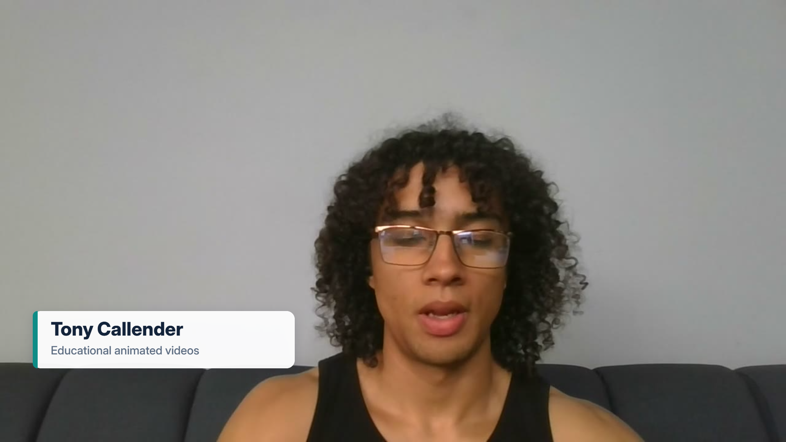
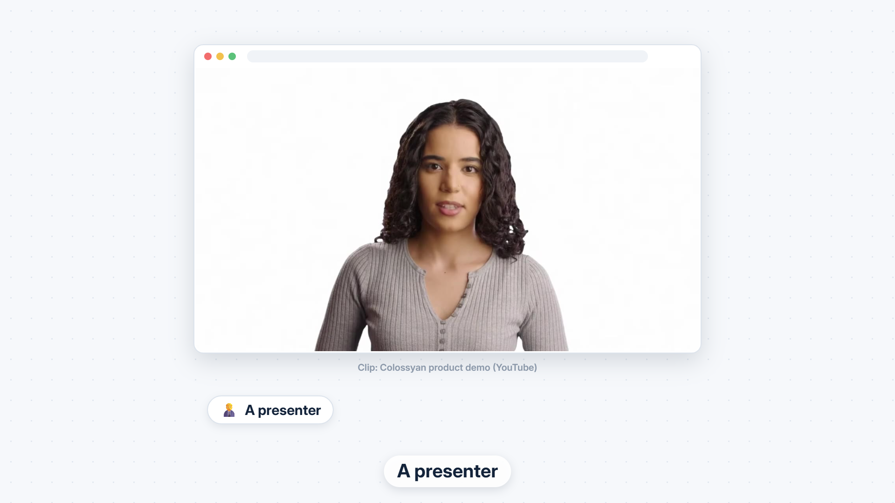
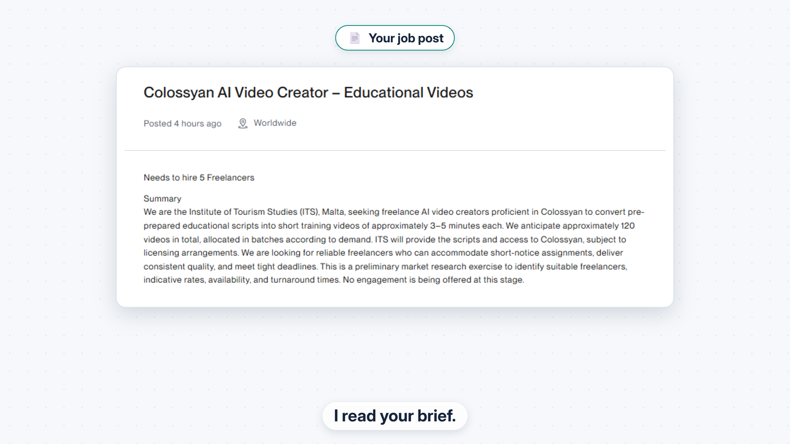
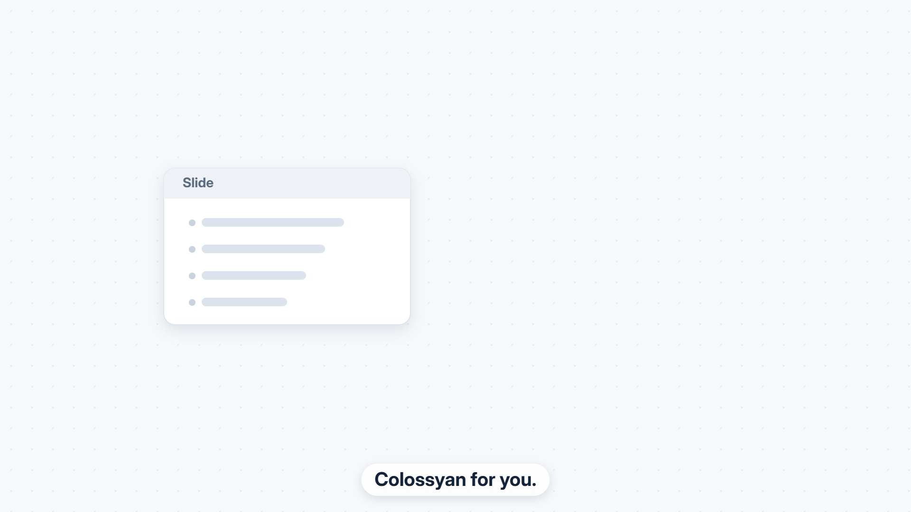
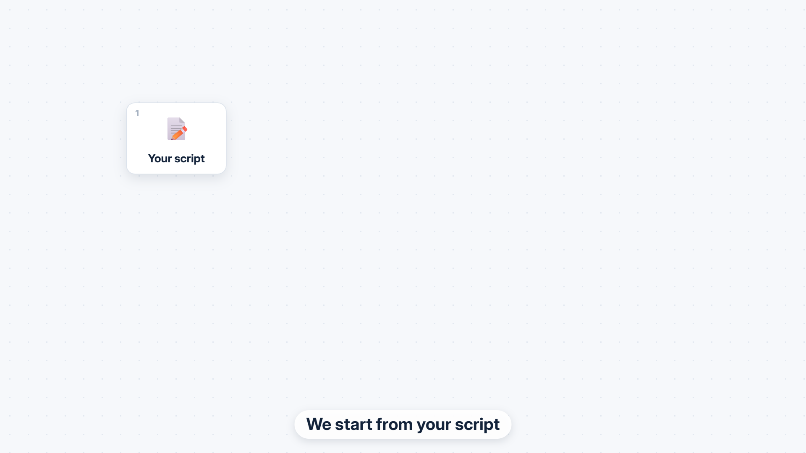
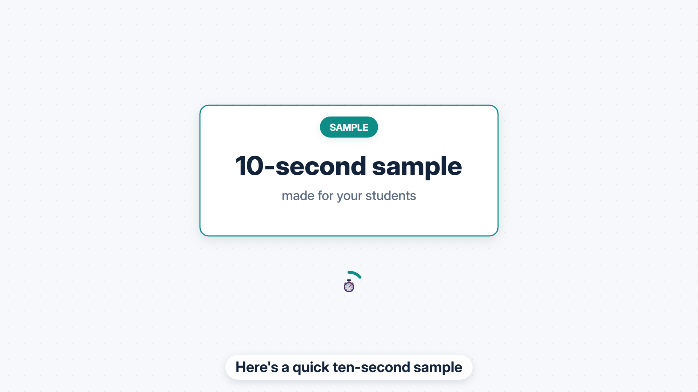
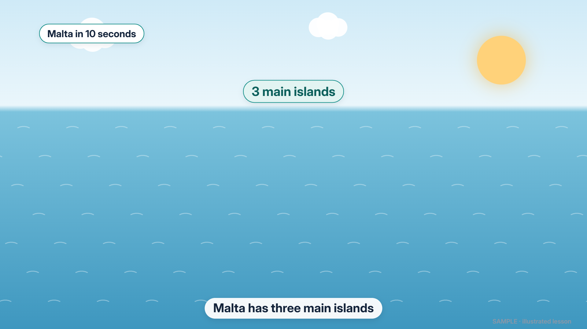
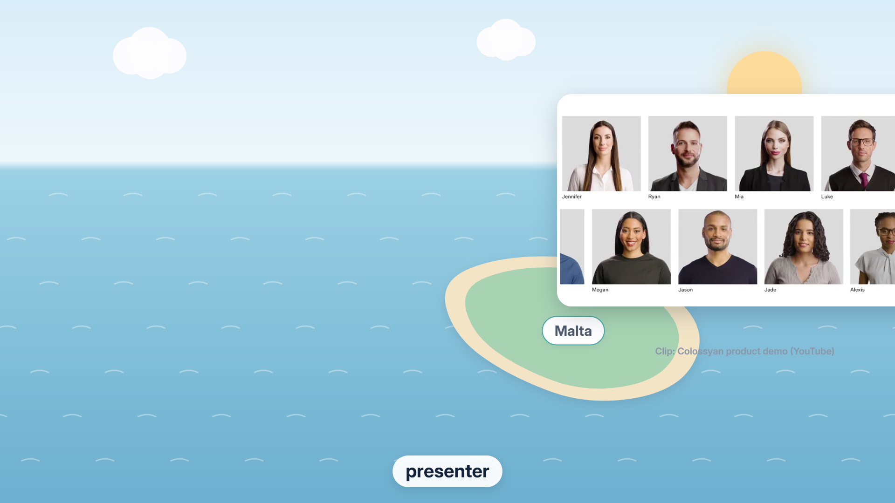
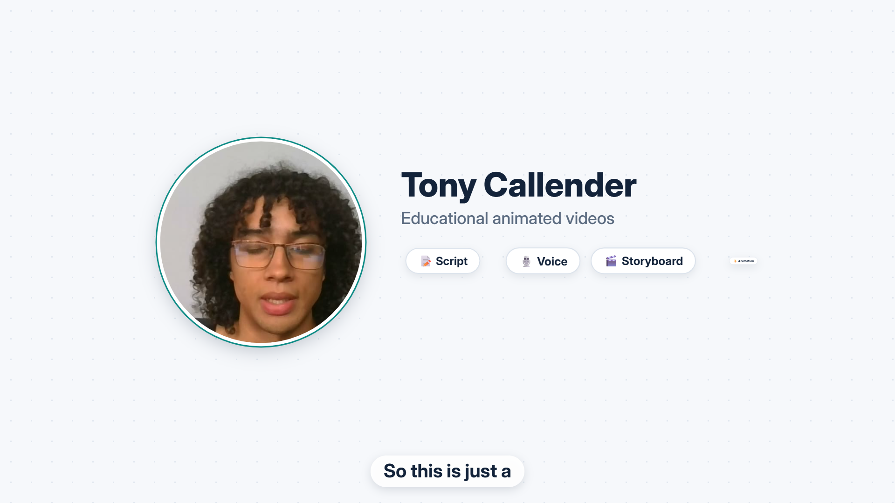

00:00.9Tony full screen (real video, clone voice synced); lower third; "Made for ITS Malta" chip. Fades out at 8.45 s.

00:09.5A presenter, a fewColossyan demo clip in a browser frame; chips Presenter / Slides / Text on screen.

00:13.6I read your brief.Their job post (cropped screenshot); highlighter on ITS Malta, Colossyan, 3–5 min, ~120 videos, batches, short-notice, consistent quality.

00:30.7We can build theseSlide → "Built in Colossyan", then "+ Animation" living scene.

00:36.9We start from yourScript → Voiceover → Storyboard → Animation; word-timed waveform; "You review" gates.

00:50.9Here's a quick ten-second"10-second sample · made for your students".

00:55.3Malta has three mainSea; Gozo / Comino / Malta pop on their names; Valletta pin + card + UNESCO badge; English / Maltese chips.

01:09.0And if you'd likeSample replays dimmed; Colossyan library clip slides in.

01:19.0So this is justTony's end card (real video, clone voice synced): questions / send your script / hop on a call.